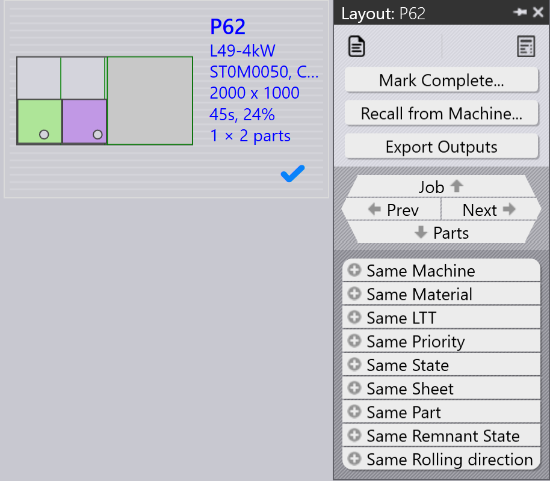

工作流
TruSmartCAM 是一个制造执行系统，用于管理和优化钣金制造流程。TruSmartCAM 中的 工作流由一系列步骤组成，您可以遵循这些步骤完成特定的任务或流程。您可以自定义 工作流以适应不同的制造流程，并根据您的具体需求进行调整。TruSmartCAM 中的 工作流通常包括以下步骤：
1. 配置系统
配置 TruSmartCAM 以匹配您的制造环境。这一基础步骤包括：定义具有其能力和 参数的机床、添加可用材料和厚度范围、使用冲头和模具配置 tooling 库、为不同 机床配置创建设置表，以及管理具有适当权限的用户帐户。正确配置的系统可确保 准确处理，并防止在后续阶段出现错误。此设置通常在初始部署时执行一次，并随着 您的工厂发展定期更新。
有关更多信息，请参阅 Add/Remove machine、Material、 Sheets、Setup tooling 和 Configure users。

2. 将零件添加到库中
使用 DXF、DWG 或 STEP 文件等受支持的格式将 2D 或 3D CAD 零件导入零件库。 在导入过程中，TruSmartCAM 会自动分析零件几何形状、验证可制造性、分配所需的 钣金工艺（激光、冲压或组合），并生成预览缩略图。导入的零件在库视图中显示 为磁贴，其中颜色编码的图标表示零件状态、工艺类型、材料要求以及任何检测到的 问题。这种可视化系统可以一目了然地快速评估零件的就绪情况。
有关更多信息，请参阅 Library。

3. 验证零件和 tooling
检查每个导入的零件是否存在潜在的生产问题。验证零件几何形状是否有效且可制造、 tooling 分配是否正确且可用、材料和厚度选择是否与库存匹配，以及成形零件的 折弯顺序是否正确定义。如果检测到问题，请在 TecZone 中打开零件以修改几何 形状、重新分配或优化 tooling、调整处理参数或纠正材料规格。在此阶段解决问题 可防止生产延误，并减少制造过程中的废料。
有关更多信息，请参阅 Part state 和 Tooling status。

4. 将零件组织成 job
根据生产需求将已验证的零件分组为 job。一个 job 代表一个逻辑生产单元，它可 能包括来自单个客户订单的零件、共享相同材料和厚度的零件、具有相似交付期限的 零件，或基于您的生产策略的组合。job 为规划提供了容器，允许对相关零件进行 批处理，通过 nesting 实现高效的材料利用，并简化跟踪和报告。job 可以通过选择 零件手动创建，也可以基于预定义的规则和筛选器自动创建。
有关更多信息，请参阅 Jobs。

5. 将 job 规划到生产机床
创建 job 后，将其分配给合适的生产机床。考虑机床能力，包括支持的工艺（激光、 冲压、转塔）、材料和厚度容量、可用 tooling 以及当前工作负载。如果存在多台 合适的机床，请根据生产优先级、机床可用性、设置要求或成本优化进行选择。分配 可以是手动的以获得灵活性，也可以基于预配置的规则和机床调度算法自动进行。
有关更多信息，请参阅 Plan job。

6. 为 job 发布 NC
在此阶段，将生成切割 layout。您仍然可以使用 TecZone 编辑 layout 并向 layout 添加切割工艺。之后，导出 NC 输出并将其传输到机床控制器或指定的网络 位置。然后，job 将被锁定以防止进一步修改，其状态更新为“已发布”以便进行 生产跟踪。
有关更多信息，请参阅 Send/Recall NC。

7. 完成生产并结算 job
在分配的机床上执行已发布的 job。在生产过程中，机床操作员遵循 NC 程序、在切割 过程中验证零件质量、管理材料的装载和卸载，并处理任何机床报警或问题。生产 完成后，在 TruSmartCAM 中将单个零件或整个 job 标记为完成。这一最后步骤会更新 库存记录、记录实际生产时间和材料使用量、归档 job 数据以供报告和分析，并完成 工作流循环。
有关更多信息，请参阅 Mark complete。
